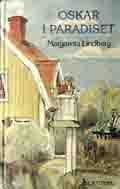
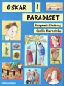

|
Startsidan
Böcker
Dramatik
Kultur-/barnprojekt
Margareta Lindberg |
|

1988/1999 |

2004 |
|
Paradiset är nittiosju steg långt och sextiofem steg brett. Det vet Oskar. Han vet att sura Jansson sätter snorkråkor under fåtöljen. Han vet att fru Klevebratt är paniskt rädd för råttor, att gubben Frid inte är pirat och att fru Berggren har en död man och en två meter lång professor. Men vilken av grannarna som kallar sig Bo Treberg och skriver deckare - det vet inte Oskar. Men han tar reda på det. Oskar är nämligen en forskarnatur. Lämplig högläsningsbok från 7-12 år. Finns på bibliotek och kan köpas från Adlibris. Illustrationer: Åke Eriksson ISBN 91-1-885102-9. Utgiven av Norstedts år 1988. ISBN 91-7221-052-4. Utgiven av En bok för alla 1999. Illustrationer: Gunilla Kvarnström ISBN 91-29-66097-1. Utgiven av Rabén&Sjögren 2004. Översatt till: Danska, Tyska, Japanska, Estniska "Tecknaren är ny. Detta märks mest på den klatschiga omslagsbilden för annars finns det många likheter mellan Gunilla Kvarnströms illustrationer från 2004 och Åke Erikssons från 1988. Layouten har blivit mer spatiös. Första kapitlet har bytt rubrik från 'Oskar i Paradiset' till 'En sann forskare'. Annars är det mesta sig likt i den nya upplagan av Margareta Lindbergs debutbok. Och det var väl bra det! För berättelsen om Oskar , brorsorna Bill och Bull, sura Jansson och övriga som finns i och runt huset som kallas Paradiset, är något så ovanligt som en svensk bok för mellanåldrarna som är charmig och rolig utan att vara det minsta flåsig. Jag och många andra tioåringar stortrivs med vår jämnårige vän, forskaren Oskar, och hänger gärna med när han ordnar luslov, klarar av en beväpnad skurk med hjälp av en ruggig slaguggla eller antecknar sina listiga hypoteser i tanke-bankboken. En skål i mjölk för Oskar i Paradiset!". Lena Kjersén Edman BTJ-häftet 2004-08-25 "Oskar är en ivrig forskare, han vet att världen vimlar av mysterier som behöver lösas. Av sin morfar får han en 'tanke-bankbok', där han samlar sina idéer, funderingar och tänkbara lösningar på problem som han stöter på. Oskar och hans familj är nyinflyttade, men de lär snabbt känna sina grannar på Aspvägen. Oskar märker att några av grannarna bär på hemligheter och det är naturligtvis hans uppgift att avslöja dem. Språket i boken är bra, den passar utmärkt som högläsningsbok eftersom den innehåller flera svåra ord som kanske behöver förklaras. Personer och miljöer beskrivs på ett levande och humoristiskt sätt. Gunilla Kvarnströms teckningar är detaljerade och roliga. Det är en bra bok för barn under de första skolåren." Marianne Eriksson BTJ-häftet 2004-08-25 |